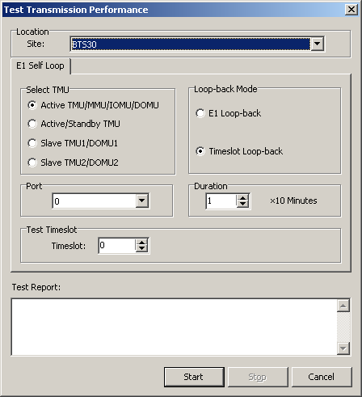

This describes how to test the E1 self loop and IASU self loop and view the testing results through a testing instrument.
Prerequisites
- The LMT runs normally.
- The communication between the LMT and the BSC is normal.
- The communication between the BSC and the BTS is normal.
Context
- Only the BTS3002C and the BTS3006C support the IASU self loop.
- Used with the error code monitoring function of the BSC to test the transmission error code.
Procedure
- Through GUI
- Testing E1 self loop
- Choose . A dialog box is displayed, as shown in Figure 1.Figure 1 Test Transport Performance dialog box (E1)

 NOTE:
NOTE: The Port is the port number of the E1 port for specifying the main control board. For the BTS3012 and BTS3012AE, each DTMU board has eight E1 ports with the port numbers from 0 to 7. For BTSs of other types, each DTMU board has four E1 ports with port numbers from 0 to 3.
The Loop-back Mode consists of E1 Loop-back or Timeslot Loop-back. When E1 Loop-back is selected, all the timeslots of the specified E1 port are tested. The maximum testing duration is 60 minutes. The time unit is minute. When Timeslot Loop-back is selected, only one timeslot can be tested at a time. You need to specify the number of timeslot to be tested. The maximum testing duration is 1440 minutes. The time unit is 10 minutes.
- Set Site and E1 Self Loop, and then click Start to test the transmission performance. After the testing is complete, a dialog box is displayed, as shown in Figure 2.
- Click Stop.
- Choose . A dialog box is displayed, as shown in Figure 1.
- IASU self loop
- In Figure 1, when you set the Site to BTS3002C or BTS3006C, a dialog box is displayed, as shown in Figure 3.
- Click the IASU Self Loop tab. A dialog box is displayed, as shown in Figure 4.
- Set parameters in Select TMU, Port, and Duration, and then click Start to test the transmission performance. The testing results will be displayed in Test Report area.
- Click Stop.
- Testing E1 self loop
- Through MML